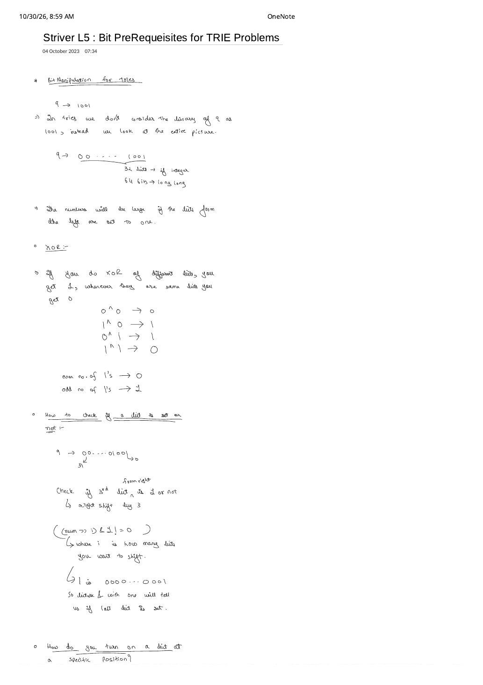
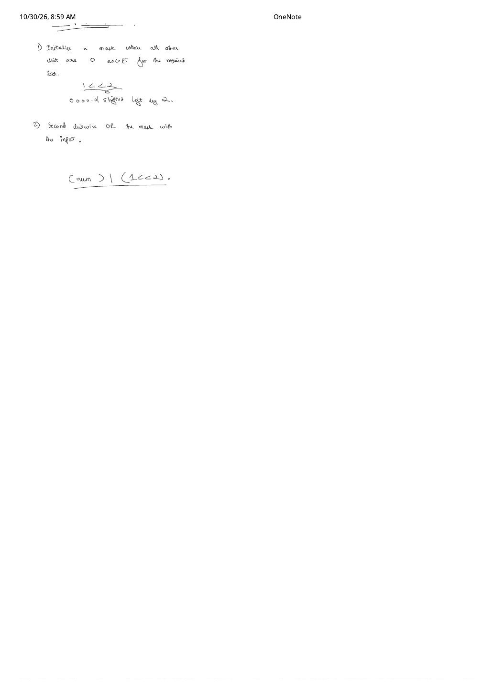

Bit Manipulation Prerequisites for Trie Problems (Striver L5)
Expanded from handwritten competitive coding study note: 07_Striver_L5_Bit_PreRequeisites_for_TRIE_Problems.pdf
Up to Lecture 4, every Trie stored lowercase words using $26$ child pointers per node. Starting in Striver Trie Lecture 5, we view non-negative integers as fixed-width binary strings over the 2-symbol alphabet {0, 1}. Before building a Binary XOR Trie in Lecture 6 and LeetCode 421, four bit-level ideas from 07_Striver_L5_Bit_PreRequeisites_for_TRIE_Problems.pdf must be rock solid: fixed-width padding, MSB magnitude dominance, XOR parity, and constant-time bit extraction/setting.
1. The "Entire Picture": Fixed 32-Bit & 64-Bit Binary Strings
In casual arithmetic we write $9$ in binary as the 4-bit string 1001. As emphasized right at the top of Page 1 of the handwritten note, a Binary Trie never uses variable-length bit strings!
Fixed-Width Register Convention in Binary Tries
- 32-bit
int: View every integer across all $32$ bit positions (indexed $31$ on the far left down to $0$ on the far right): $$9 = \underbrace{\texttt{00000000\,00000000\,00000000\,0000}}_{28\text{ leading zeros}}\texttt{1001}_2$$ - 64-bit
long long: Pad out to all $64$ bits (indexed $63$ down to $0$).
Because every number has the exact same length ($32$ or $64$ bits), no number's binary string is ever a proper prefix of another's—meaning a Binary Trie needs no bool flag at its leaves!
2. Why Leftmost Bits Dominate (MSB $\to$ LSB Ordering)
The second observation on Page 1 states: "The numbers will be large if the bits from the left are set to one." Formally, by the geometric series identity, a single 1 at bit position $k$ strictly beats every lower bit combined:
For example, $2^4 = 16 \gt 8 + 4 + 2 + 1 = 15$ ($\texttt{10000}_2 \gt \texttt{01111}_2$). Consequently, whenever we want to maximize (or compare) an integer or an XOR result, we must make greedy decisions starting at the Most Significant Bit (bit $31$) at the root of the Trie and step downward to the Least Significant Bit (bit $0$).
3. Bitwise XOR (^) Truth Table & Parity Laws
Bitwise XOR compares two numbers bit position by bit position independently (with zero carry propagation between columns!):
XOR Truth Table & Algebraic Identities
- Single-Bit Rule: Different bits yield $1$; identical bits yield $0$: $$0 \oplus 0 = 0, \qquad 1 \oplus 0 = 1, \qquad 0 \oplus 1 = 1, \qquad 1 \oplus 1 = 0$$
- Multi-Operand Parity Rule (from Page 1):
- XOR of an even number of $1$s $\to 0$
- XOR of an odd number of $1$s $\to 1$
- Essential Identities for XOR Tries:
$$x \oplus 0 = x, \qquad x \oplus x = 0, \qquad x \oplus y = y \oplus x, \qquad (x \oplus y = z) \iff (x \oplus z = y)$$
And to make a bit
b($\in \{0, 1\}$) produce $1$ under XOR, we always seek its opposite bit $\bar{b} = 1 - b$ (written in code as1 - borb ^ 1), since $b \oplus (1 - b) = 1$.
4. Bit Operation 1: Check Whether the $i$-th Bit Is Set
Bit positions are 0-indexed from the right (LSB): bit $0$ has weight $2^0 = 1$, bit $1$ has weight $2^1 = 2$, bit $2$ has weight $2^2 = 4$, bit $3$ has weight $2^3 = 8$, up to bit $31$.
Suppose $\text{num} = 9$ ($\texttt{00\dots01001}_2$) and we want to check whether the $i = 3$-rd bit from the right is set:
- Right-shift by $i$: Compute
num >> iso the target $i$-th bit slides all the way to the rightmost position (bit $0$). For $9 \gg 3$: $\texttt{00\dots01001}_2 \gg 3 = \texttt{00\dots00001}_2$. - Mask with
1(0000...0001): Every bit of $1$ is $0$ except bit $0$, so bitwise AND(num >> i) & 1zeros out bits $31 \dots 1$ and isolates the shifted bit cleanly as0or1!
Why (num >> i) & 1 Beats (num & (1 << i)) != 0 in Binary Tries
- Direct array index:
(num >> i) & 1evaluates directly to the integer0or1, which you can pass straight intonode->links[bit]! By contrast,num & (1 << 3)evaluates to $8$ (not $1$), requiring an extra!= 0conversion. - Avoids C++ signed overflow at $i = 31$: In C++ prior to C++20, shifting a signed 32-bit literal
1 << 31into the sign bit is undefined behavior, whereas(num >> 31) & 1on non-negative integers (orunsigned int) is completely safe!
5. Bit Operation 2: Turn ON (Set) the $i$-th Bit
When accumulating the maximum XOR value bit by bit from $i = 31$ down to $0$, whenever we successfully match opposite bits at position $i$, we need to turn ON bit $i$ in our answer variable ans. Page 2 breaks this into two steps:
- Build a single-bit mask
1 << i: Left-shifting1(0000...0001) by $i$ creates a number where every bit is $0$ except position $i$ (e.g., for $i = 2$,1 << 2$= \texttt{0000\dots00100}_2 = 4$). - Bitwise OR with the number: Since $b \mid 0 = b$ (leaves all other bits untouched) and $b \mid 1 = 1$ (forces bit $i$ to $1$), compute
num = num | (1 << i): $$\text{num}' = \text{num} \mid (1 \ll i)$$ (Use1ULL << iwhen $i$ can reach $31$ in signed 32-bit C++ or up to $63$ for 64-bitlong long!)
(num >> i) & 1 (extracting bit $i$) and ans |= (1U << i) (setting bit $i$) are the only two bit operations needed across every Binary Trie problem.6. Complete C++ & Python Bitwise Trie Toolkit
#include <bits/stdc++.h>
using namespace std;
// 1. Extract the i-th bit (0-indexed from LSB, returns 0 or 1)
inline int getBit(unsigned int num, int i) {
return (num >> i) & 1U;
}
// 2. Check if the i-th bit is set (boolean form from handwritten Page 1)
inline bool isBitSet(unsigned int num, int i) {
return ((num >> i) & 1U) != 0U;
}
// 3. Turn ON (set) the i-th bit (handwritten Page 2)
inline unsigned int setBit(unsigned int num, int i) {
return num | (1U << i);
}
// 4. 64-bit equivalents for `long long` XOR Trie problems (i in 0..62)
inline int getBit64(unsigned long long num, int i) {
return (num >> i) & 1ULL;
}
inline unsigned long long setBit64(unsigned long long num, int i) {
return num | (1ULL << i);
}
// Preview: Walking an integer from MSB (31) -> LSB (0) as a Binary Trie key
void print32BitPath(unsigned int num) {
for (int i = 31; i >= 0; i--) {
int bit = getBit(num, i); // Current edge: 0 or 1
int opposite = 1 - bit; // Desired edge to maximize XOR: bit ^ 1
(void)opposite;
cout << bit;
}
cout << '\n';
}# Python integers have arbitrary precision, so we explicitly bound the bit-width B = 32 (or 64)
def is_bit_set(num: int, i: int) -> bool:
return ((num >> i) & 1) != 0
def get_bit(num: int, i: int) -> int:
return (num >> i) & 1
def turn_on_bit(num: int, i: int) -> int:
return num | (1 << i)
# Verify on handwritten example num = 9 (00...01001_2):
assert is_bit_set(9, 3) is True
assert is_bit_set(9, 2) is False
assert turn_on_bit(9, 2) == 13 # 1001_2 | 0100_2 == 1101_2 (13)- Pad every non-negative 32-bit
intconceptually to 32 bits (or 31 bits30..0if guaranteed $\le 2^{31}-1$) and walkfor (int i = 31; i >= 0; i--). - Read bit $i$ with
int bit = (num >> i) & 1;. - Ask the Trie for the opposite bit
1 - bit; if present, turn on bit $i$ in the answer viaans |= (1U << i);!
From the Handwritten Notes
View original handwritten page — Striver L5 (Page 1: 32/64-Bit View of 9, MSB Magnitude Rule, XOR Parity & Checking Bit $i$)


00...1001, leftmost-bit dominance, XOR truth table & odd/even parity, and checking set bits via ((num >> i) & 1) != 0.View original handwritten page — Striver L5 (Page 2: Turning On a Bit at Position $i$ Using Mask 1 << i and OR)


1 << 2 and bitwise-ORing (num) | (1 << 2) to set bit $2$.